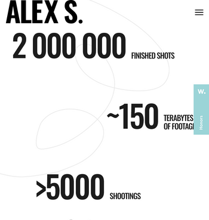
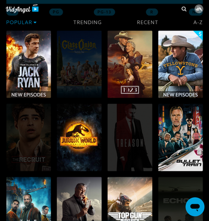

Alignment
Bobby Lawrence Karate
https://www.blkaratestgeorge.com/
This site makes use of thorough alignment tactics. You can see above that the images are aligned, the paragraphs are aligned with them and with each other, and even the logo and heading appear aligned with the images. An excellent example of the principle of alignment.
White Space
Alex Sakhnenko Photography
This site's use of white space is impressive! You can see the whole thing using the link, but this image highlights it well. Following the theme of the site these stats are placed seemingly at random, with plenty of space in between, but that's what makes it look so good! As you scroll down the page and the numbers pop into view it really highlights the creative style of the designer.
Contrast
Vidangel
https://www.vidangel.com/browse
With this image not only do the logo and the sort-by tabs pop against the black background, but the movie covers as well. Best of all this site uses contrast to easily tell you what movies and tv shows are available to watch with your streaming services. The light movies are available and the dark movies are not yet available. A good instance of well used contrast for sure!